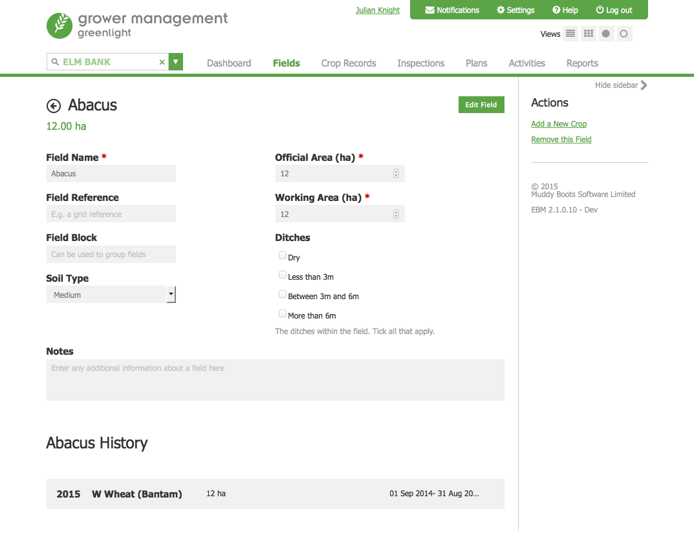
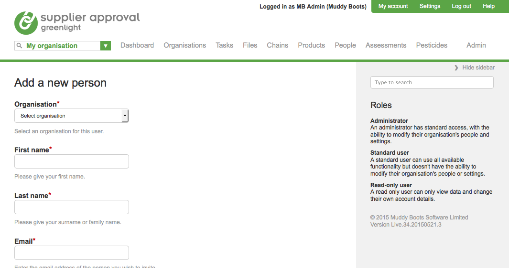

The sidebar appears throughout the applications. It is light grey (#f1f1f1) although white is an acceptable alternative.
The sidebar can be used for page introduction text and contextual actions relating to the main body content such as filters, export options, help text and links (secondary actions). These are displayed as green hypertext links.
At the top of the sidebar is a search function which helps to filter the results displayed on the page.
Primary actions are buttons and these should always appear in the main screen area and not in the sidebar as shown in the example below.

The sidebar can be hidden and shown by clicking the right arrow and ‘Hide sidebar’. This allows content to stretch to full screen, a useful benefit for customers on smaller screens who wish to view the larger table views.
